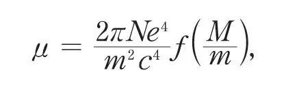
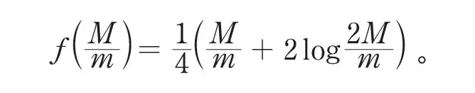
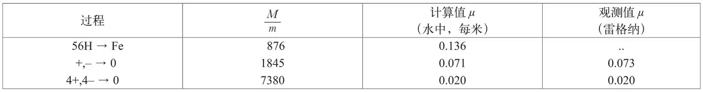

英文
英文詹姆斯·金斯
编者按
詹姆斯·金斯在文中指出：科学发展最神圣的原则之一是新旧理论的更迭。几百年来，物理学家们一直对物质既不能产生也不能灭亡这一原则深信不疑。可是现在，他指出，人们越来越相信恒星只有通过物质的湮灭过程才能获取能量。有证据表明：一般的恒星早已在过去的岁月里辐射掉了现有质量的好多倍。恒星存在的过程似乎就是其物质不断湮灭的过程，因为有质量的粒子会将其能量用于产生辐射。现在人们利用核聚变原理来解释这一现象，质量和能量的相互转化关系可以由爱因斯坦方程E = mc2表示。 英文
在贯穿整个科学史的大部分时间里，物质都被看作是守恒的，它们既不会凭空产生，也不会凭空消失。但是现在大量天文学的证据似乎表明，物质的湮灭是恒星辐射能量的唯一来源。从而出现了这样一种局面：大多数天文学家认为物质湮灭可能是宇宙中的一个基本过程，而同时，许多也可能是大部分的物理学家对这种可能性持谨慎态度，甚至干脆不相信。我一直认为试着评述与这个问题相关的现状会是一件有意义的事情。 英文
天文学的证据
天文学上关于物质湮灭的论证，不是以恒星辐射的强度为依据，而是基于恒星存在的时间。尚未发现一种不如完全湮灭那么剧烈的能量转化，能够在恒星显然存在的漫长岁月里，始终为其提供持续辐射所需要的能量。所有可以用来估算恒星寿命的方法都表明，整体看来，恒星已经存在了万亿年，只有一个方法明显例外，我将在后面讨论它。 英文
有些方法取决于临近恒星的引力作用速度；例如，恒星穿越空间的速度表明它的能量是近似均分的，而要实现这样的均分必须经过数以万亿年的时间。被称为运动星团的星群中的个体成员，由于在其旁边经过的恒星的一定程度上的引力作用，它们的路径已经出现了改变，这再次表明活动过程已延续了数万亿年。目视双星的轨道也是如此。在这三个例子中，我们所使用的时钟的单位时间类似于在气体理论中所称的“弛豫时间”；在这个类比中，单个恒星被当作单原子分子处理，双星被当作双原子分子，而运动星团的瓦解对应于气体的扩散过程。 英文
当然，只有当我们假定其他恒星的引力作用是引起恒星运动和排列改变的唯一原因时，这些对恒星年龄的估计才成立。可以想象其他原因也是存在的，并且必然在某些方面有一定的贡献——辐射压力，由宇宙空间中的游离物质或弥散在空间中的宇宙云原子造成的轰击。但是计算表明源于这些过程的贡献是相当微不足道的。实际上，当我们把这些因素考虑进去时，对恒星运动的讨论就不再是一个天文学问题，而变为一个物理问题；我们必须把恒星当作是在物理介质中作布朗运动的“粒子”。做这样的处理之后，我们发现这个布满恒星的介质，以我们谈及运动着的布朗粒子的温度的方式而论，它的温度可达1062度数量级。单个恒星和双星都表现出与此数量级温度相对应的能量均分，显而易见，物理中介作用，比如辐射压力和原子压力等建立平衡的温度要低得多，只有104度的量级，不可能对建立均分的过程有任何可观的贡献；它们不过是作为恒星运动的阻力罢了，平均而言往往是在减慢它们的速度。 英文
在第二类双星系统，即光谱双星中，两颗子星是如此之近，以至于从它们附近经过的恒星对它们两个的吸引效果几乎相同，因此就不能以不同的作用效果改变双星系统组成物的相对轨道。显然对于这种系统的内部运动，毫无疑问可以采取任意近似方式以达到其能量均分的状态。尽管如此，仍然可以描绘出双星系统结构所固有的演变过程，从仍相互接触的两组分所处的近似圆轨道开始，这很可能就是一个系统刚刚分裂形成的状态；然后继续发展到形状远不是圆的轨道，此时这两个组分产生了实质上的分离。尽管还不能确定，但似乎可以认为这种演变过程就是一种老化的过程。当母星刚刚分裂形成双星系统时，新形成的系统从刚提到的结构变化的末端，逐渐沿着一系列变化过程演化。现在观测表明，毫无疑问，处于该演化过程末端的恒星所具有的质量大大低于初始阶段的质量。我们知道不同类型恒星以辐射形式损失质量的速率，由此可以计算出为产生存在于演化过程两端的质量差而需要的时间。结果再一次证明这个过程需要数万亿年。在这里我们所用的度量标准是恒星辐射的流失率，或与之相对应的，物质损失率。 英文
反对这几种估算方法的人一定会提到这样一个证据，如果用最一目了然的方式解释的话，它似乎会得出完全相反的结论。即遥远的河外星云的谱线都发生了红移，红移量与星云的距离近似成正比，但不精确。如果这个现象被解释成最直接的原因，即多普勒效应，则这些星云必须全部从我们身边分散开去，并且在空间中互相远离。远离的速度是如此之大以至于大约每过14亿年宇宙的尺度就要增加一倍。这样的膨胀率似乎完全无法与之前对恒星存在了万亿年的估计相符。计算表明宇宙的初始半径必须在12亿光年量级（爱丁顿），而现在的宇宙半径似乎只有20亿光年量级（德西特）。如果可以把以上的这些估计看作是准确的，那么我们就可以确定宇宙的年龄只比10亿年多一些，甚至比由地球上岩石的放射性推得的地球年龄小很多。没有人对这两种估计的精确性提出太高的要求，尤其是对第二种，但总的情况似乎不允许宇宙在这万亿年间每14亿年就膨胀一倍。 英文
尽管还有其他站得住脚的解释可供选择，但它们中没有一个可以让人完全信服，因而目前的局面令人十分困惑。尽管现在还有很多意见分歧，许多天文学家认为，其他一些关于星云存在明显退行的解释将很可能被适时发现。到那时，由大量天文学证据所支持的恒星已存在万亿年的观点就可以毫无阻碍地得到人们的认可了。 英文
如果暂时接受这样的恒星年龄，那么通过计算可以得到，普通恒星已经辐射出相当于自身质量很多倍的能量了。换言之，普通恒星在诞生之初的质量必定是现在的很多倍。确实，光谱双星的演化过程为我们描画了一颗典型恒星的生命历程。它最初的质量是太阳质量的10到100倍，而终结时，它的质量与太阳的质量不相上下，甚至比太阳的质量还要小。很难想象，若不是以实物原子或者至少以实物电子和质子的形式，这些新生恒星的巨大能量能存储在哪里。因此我们就得到了这样的结论，恒星的生命历程就是其自身物质不断湮灭的过程，电子和质子相互湮灭，并以这种方式为恒星辐射提供能量。至少，从天文学上我们可以得到这样的推测，而检验这些推测则要有赖于物理学了。 英文
高穿透性辐射
如果要找出湮灭过程的直接证据，那么该证据最有可能从本世纪初麦克伦南、卢瑟福和其他科学家在地球大气中发现的穿透力很强的辐射中获得。这是因为在整个物理学中只有这里涉及的辐射光子的质量与期望中由电子和质子湮灭产生的光子质量相当，这些我们在后面还会谈到。最近几年，赫斯、密立根和雷格纳等人十分细致地研究了这种辐射。他们的研究几乎不容置疑地表明这些辐射是从外太空进入到地球大气的；这就是这些辐射通常被称为“宇宙射线”的原因。 英文
一开始人们理所当然地认为这种辐射本质上肯定是γ辐射，因为它的穿透力比被认为有可能的任何种类的粒子辐射都强。现在看来这个理由并不充分，理论研究已经证明粒子辐射，包括α粒子和β粒子的辐射，可能拥有和观测到的辐射一样强的穿透力。 英文
然而其他的论证已经十分令人信服地表明这种辐射不可能是α或β辐射。简言之，其中心论点是，由带电粒子构成的辐射会受到磁场的影响，而宇宙辐射则不会。运动着的电子或其他带电粒子会受到磁场的作用，这是由于它在运动；它运动得越快，磁场对它施加的力也就越大。这种辐射的穿透力非常强，只有以很高速度运动的带电粒子才能达到这么强的穿透力。如果一大群这样的粒子进入地球磁场，高速运动会使它们绕着非常接近地球磁力线的轨道做螺旋运动，结果在地球磁极附近落下的粒子要远远多于其他地方的粒子。爱泼斯坦[1]估计对于一大批电子，若要具有宇宙辐射那样的穿透力，它们必须以大约穿过10亿伏特才能获得的能量运动，他还计算出以这个能量运动的入射电子将被完全限制在两磁极附近的相对较小的圆里。而实际上，观测到的辐射非常平均地落在地球表面的各个区域，并没有发现明显的差异。英国、澳大利亚、新西兰共同组成的南极探险队[2]的成员发现，在南磁极周围250英里区域内的辐射强度，与他们之前在南澳大利亚测得的，以及其他人在美国、加拿大和北大西洋得到的结果相同。此辐射具有极硬γ辐射的性质这一点似乎是无可置疑的[3]。 英文
最初，博特和科尔霍斯特的一些实验结果似乎不支持这个推论。他们设置了两个盖革计数器，将其中一个垂直置于另一个的上面，并且发现如果这个辐射是粒子辐射，两个计数器记录的同时放电的粒子数几乎与用纯几何方式预计的结果相同。当然，产生这些电离的辐射不一定是从外太空进入地球的初级辐射。当任何初级辐射穿过大气层时，都必然会产生各种类型的次级辐射，其中任一种次级辐射都可能会直接导致博特和科尔霍斯特在实验中观察到的电离作用。首先进入地球大气的初级辐射非常可能是电磁辐射，而造成电离的辐射则是次级粒子辐射。 英文
为了检验这种可能性，博特和科尔霍斯特在两个计数器之间放置了一块金板。这自然就会造成同时发生放电的粒子数目减少，并且通过减少的数量就可以计算出真正引起电离的辐射的穿透力。结果发现它的穿透力和初级辐射的穿透力近似相同。假若是初级辐射本身造成了计数器中的电离作用，并且它本质上是粒子辐射，那么到目前为止的所有现象都可以得到解释。 英文
最近莫斯–史密斯[4]对这个解释进行了验证并发现了不足之处。他改进了博特和科尔霍斯特使用的设备，在原有的两个计数器下面加入了垂直于它们的第三个计数器。他首先证实在三个计数器中同时发生的电离个数正是我们通过它们的几何排列得到的预期值。现在，如果引发这些电离的是粒子辐射，那么它应该在磁场中发生偏转。例如，如果一个足够强的磁场加到第二和第三个计数器之间，第三个计数器应该被完全屏蔽而免受从前两个计数器穿过的辐射，因此前两个计数器的计数将保持不变而第三个将减少为零。但是莫斯–史密斯发现这种情况并没有发生。尽管他的磁场强度已经是完全屏蔽第三个计数器所需强度的很多倍，但这个磁场的加入并没有对同时电离的计数情况产生任何影响。这表明电离辐射不是粒子性的，而博特和科尔霍斯特也已经指出电离辐射很可能就是初级辐射，这样就证实了密立根和爱泼斯坦的理论依据，从而得到初级辐射具有γ辐射的性质。 英文
产生辐射的模式
如果就像前面的讨论和实验所表明的那样，初级辐射具有γ辐射的性质，那么它的起源就应该能够通过其穿透力揭示出来。这样的辐射由光子构成，可以把它们比作许多发以相同速度——光速运动着的子弹。因而它们的穿透能力也仅由其质量决定，并且我们可以通过理论研究从一个光子推导出另一个光子。然而每个光子都起源于原子激变，并且光子的质量精确地等于母原子在这个激变过程中减少的质量。例如，如果这里的原子是氢原子且激变由湮灭过程组成，那么湮灭产生的光子的质量必须精确等于氢原子的原始质量，即1.66×10–24 g。再比如，无论什么原子中的一个质子和一个电子相互之间发生了湮灭，这在整体上减少了原子量，那么产生的光子的质量必定等于原子中原来位置上的电子和质子质量之和。除去少量的“结合部分”的质量外，它也与氢原子的质量相等。 英文
研究宇宙辐射穿透力最有效的方式，是把合适的仪器沉入到湖面以下不同深度，并观测入射的宇宙射线在不同深度被水吸收后引起的电离作用。密立根、雷格纳和其他一些人非常细心巧妙地完成了这样的实验观测。 英文
他们的结果很难解释。格雷指出[5]有一种软化效应持续在起作用。由于这种效应持续在起作用，当一个能量量子被吸收时，就会产生一个反冲电子，这个电子反过来又引起了能量辐射。辐射的能量与原始量子的能量相比，尽管略低一些，但也大致相当。当辐射在吸收介质中传播一段距离之后，观察到的电离就不再能反映未被吸收的初级辐射的真实强度，而是对应于与所有较软的次级辐射部分保持平衡的初级辐射的值。 英文
考虑到这个复杂的情况以后，就可以从电离曲线中得到穿过不同厚度吸收介质之后依然存在的真实的初级辐射强度。如果初级辐射包含波长不同的成分，那么它就会有像普通光学那样的线状谱，这些不同成分的吸收系数是不同的。在这种情况下，应该可以把观测到的曲线看作是多条简单指数曲线的叠加，每一个辐射成分都对应着一条指数曲线。 英文
实际上人们发现这是可以做到的。不同的实验者并没有得到完全一致的结果，但是他们都一致认为在辐射区域的末端附近有一段很长的延伸范围，在这个范围内辐射强度呈简单的指数率衰减。这只能说明辐射中存在着一个特殊的成分，它比其他成分硬很多，以至于在经过一定厚度的介质后，所有较软的成分都已经被完全吸收，而这个成分的辐射仍然保持着相当的强度。雷格纳在对上述现象进行了仔细的研究之后发现，全部辐射中最硬的那个成分在被水吸收时的吸收系数为每米0.020。其他实验者得到的数值与此一致，偏差不超过10％。 英文
利用克莱因–仁科给出的理论公式，我们可以从观测到的辐射吸收系数μ中推导出光子的质量[6]。这个公式可以由下面的形式给出：

其中：M为光子质量，m为电子质量，e、c为它们的通常定义，f表示以M/m为变量的一个相当复杂的函数。对于所有的宇宙辐射，该公式中的M/m都非常大，而当M/m取这些值时，可以假设f有如下形式：

这些公式的计算基于这样的假设：吸收是由单位体积内N个完全自由的电子所引起的。电子是完全自由的这个条件在自然界中永远不可能完全满足，因为每个电子都会被其他电荷束缚着，不论束缚是强是弱。如果一个电子被一个质量为m'的系统所束缚，那么对于这种情况我们可以考虑把m'的一部分增加到公式中的质量m上，增加部分的大小取决于耦合的强弱。因此弱耦合电子的表现几乎与自由电子一样，但是对于一个与质子或原子核等大质量系统紧紧耦合的电子，它会表现得如同质量非常大的电子，公式表明在这种情况下它不具有明显的吸收能力。 英文
通过与观测到的γ射线进行比较，人们已经检验了克莱因－仁科公式。对于较轻的元素，它给出的值与观测到的吸收曲线符合得相当好，条件是这里所有的核外电子都被当作自由电子处理，同时完全忽略核内电子。这样的忽略是自然的，因为我们知道较轻元素的核内电子耦合很强，即使是最硬的γ射线也只会对它们造成很小的影响。但是，这仅对较轻元素成立；就铅而言，赵[7]发现在最硬的γ射线下存在一个附加散射，他认为这来源于原子核。换句话说，他发现至少铅的某些核内电子的耦合强度还抵御不了最硬γ辐射的冲击。更不用说以它们的耦合强度去抵御数量巨大的宇宙辐射光子的冲击。从理论角度作非常一般性的考虑[8]，在处理宇宙辐射时，很可能克莱因－仁科公式中的N指的是包括核内和核外的所有电子，而不应该仅仅是后者。此外还应该增加一项，用来表示原子核内质子的散射，然而计算表明质子散射的作用量很小，完全可以忽略不计。把核内电子计算在内的结果就是要用原子量取代原子序数，因此对于给定厚度的介质，它的吸收就严格正比于射线所经过区域的介质质量，而与它的性质毫无关系，除非是由光电效应造成的更少量的吸收有可能与后者相关。这样就使除氢以外的所有原子在吸收宇宙辐射的能力上加倍，甚至大于原来的两倍。经过这样的处理，水的吸收能力比通常的计算值高出了80％。 英文
对于由铁的合成以及由1个质子和4个质子分别与它们的伴随电子发生湮灭而产生的辐射，我分别进行了计算，并在下表中给出了吸收系数（水中，每米）。结果是根据克莱因－仁科公式计算出来的，计算过程中把所有的电子，包括核内电子，都视为自由电子：

最后一列给出的是宇宙辐射中两种穿透力最强的成分的吸收系数，这是雷格纳通过分析得到的。观测值与前一列中的计算值也许相符得还不错，其偏差在观测和分析所引起的误差范围内。很难把这么好的符合度仅仅归因于巧合。两次吻合，一次误差在5%以内，另一次在2.7%以内，出现错误的概率为1/3,000。在我看来这个结果强烈地显示出：在迄今为止观测到的宇宙辐射中，穿透力最强的成分有可能起源于一个α粒子和它的两个使其变为电中性的电子（组成氦原子的成分）的湮灭，而另一个较软的成分可能来源于一个质子和一个使其变为电中性的电子（组成氢原子的成分）的湮灭。 英文
由密立根首先提出并且主要由他倡导的另一种可能性是，宇宙辐射起源于电子和质子形成原子的过程。然而宇宙辐射中最硬的成分似乎比铁合成过程中产生的辐射硬很多，而密立根自己也认为更重元素的合成可以被排除掉，因为它们在宇宙中是很稀少的。如果按照我提出的，物质的湮灭是宇宙辐射中最硬的两个成分的真正来源，那么我和密立根设想，很可能较软的成分是在简单原子组成复合原子的过程中产生的。但是很多人会对宇宙辐射有多种起源表示怀疑。显然比较简单的假设是认为只有两种最硬的成分构成了基本辐射，而所有其他成分仅仅是这部分辐射的软化或降阶形式。但是这种假设给自己带来了一些难题，因为如果我们用电离能力去衡量宇宙辐射的强度，那么这个假设的次级辐射的电离强度会是初级辐射的很多倍。但是无论较软成分的来源是什么，这两个最硬成分中的光子所具有的质量分别与氢原子和氦原子的质量相同，这似乎为物质可以在遥远的空间中湮灭提供了有力的证据。如果我们假定这个过程发生在一个足够大的尺度内，那么这个假设就会使大量的天文学和宇宙学问题变得有条理并且易于理解，这是其他假设无法做到的。 英文
宇宙辐射产生的位置
对于这种高穿透性辐射起源于何处人们有不同的看法。其中的很多观点都被以下这个在我看来现在已被牢固确立的事实排除掉了，即无论是白天还是黑夜，宇宙辐射的强度在任何时候几乎都是一个常数[9]，它的变化幅度至多为1/200量级。这个量似乎确实会发生一定的变化，但主要是随着气压而变化。密立根认为这些变化用地球大气层吸收能力的涨落就足以解释。曾经有人认为这些辐射可能包含那些由地球大气中的高空雷雨云发射出来的电子，或者包含因在空间静电场中漂移而获得极高速度的运动电子。这个静电场的电势梯度虽然微不足道，但是由于电场范围极为宽广，因而电势差非常大。即便仍然认为宇宙辐射由粒子辐射产生，也很难将这些假定起源中的任何一个与落向地球表面的辐射所具有的稳定性和均匀性统一起来。 英文
辐射强度与太阳时和恒星时近似无关这一事实似乎表明，可测到的辐射不会来源于太阳或者恒星。如果将太阳当作普通恒星处理，那么我们在正午接收到的星光是在午夜接收到的星光强度的100,000,000倍。然而排除刚才提到的纯粹由局部“气压”不同引起的作用之后，我们在这两个时刻得到的辐射强度仍然相同。而辐射强度与银河系的位置几乎无关这一事实也说明，宇宙辐射中至少有一大部分会来自于银河系范围以外，这也印证了“宇宙辐射”这个名字是恰如其分的。 英文
那么这些辐射是从哪里来的？为了能够最终找到原因，从时间入手比从空间入手更简单。宇宙中的平均物质密度约为10–30 g/cm3，并且在宇宙存在的每一秒钟，一束宇宙射线会穿越3×1010 cm厚的宇宙空间层。因此每秒钟它穿越的辐射截面是3×10–20 g/cm2。然而我们已经发现，这个最硬成分的强度要减少1%，就必须穿过50 g/cm2，这个过程所需的平均时间为16×1020秒，或者约5×1013年——以任何方式计算，这个时间都要比恒星的寿命长；辐射强度减小到初始值的1/e需要5×1015年，比我们现在认为的宇宙的年龄都要长。 英文
因此，我们可以近似认为宇宙辐射中最硬的成分是不会衰减的，因为宇宙存在的时间长度还不足以使它被吸收的部分达到任何可观的量。也可作一个稍差一点的近似，认为较软的成分也是不会被吸收的。这使我们可以把宇宙空间看成是充满了自宇宙诞生以来到现在曾经产生的所有或几乎所有的宇宙辐射。我们接收到的这些射线不仅带来了太空最深处的信息，还带来了时间最久远的年代的信息。并且，因为我们不能在地球上制造出宇宙射线，所以它们所携带的信息显示出这些普遍适用于遥远空间和时间的物理定律有别于我们地球上的物理定律：不同的过程导致不同的结果。就我们现在对宇宙射线之谜的解读情况来看，其中至少有一个过程应该是物质的湮灭，尽管我们没有办法知道这种湮灭是发生在现在，还是发生在遥远的过去，或者甚至仅是在宇宙诞生之初；这些射线的存在已经能够充分说明，在宇宙演化史中的某个地点和某个时刻，物质发生了湮灭。 英文
类似的说明也适用于较软的成分。密立根确信它们产生于较轻原子合成复杂原子的过程之中，并因此认为这种合成还在进行。但是由于这些较软的成分同样具有很强的穿透力，因此实际上也是不会衰减的。即便密立根对这些射线起源的解释可以成立，也只能证明在宇宙漫长的发展史中，物质的合成过程曾经在某个地点和某个时刻发生过，而不能证明这样的合成仍在进行。 英文
实际上，辐射强度与银河系的位置无关这一事实也许可以这样来理解：宇宙辐射仅仅是宇宙发展史中的一个遗迹。如果这个辐射过程还在继续，而银河系的主体又离我们那么近，显然我们应该察觉到它所造成的影响。然而还有可能（我认为非常可能）这个辐射仍然在不断地从比银河系存在时间更长的河外星云中产生出来，也许它们只在凝聚成恒星之前发出这样的辐射，而银河系中能产生这种辐射的原子都被密闭在了恒星的内部，所以辐射在到达我们这里之前已经被转变为星光了。 英文
密立根曾经估算过，在不把太阳光计算在内的情况下，地球上接收到的宇宙辐射的总能量大约为星光能量的1/10。在地球附近，恒星发出的辐射能量足以使空间的绝对温度上升大约3.5度，而宇宙辐射的能量则只能使此空间的绝对温度升高2度。在星系间的黑暗区域，情况则截然相反。在那里，来自于遥远星系的微弱星光和恒星热量最多只能使空间温度稍稍升高到绝对零度以上不到1度，而宇宙辐射的强度则可能和地球附近的强度相同，对应的绝对温度大约为2度。总体来说，宇宙空间包含的宇宙辐射很可能会远远多于光和热，虽然在确定这一点的时候我们也必须记得，事实上宇宙辐射是永远不会消失的，而以光和热为呈现方式的普通辐射则会。宇宙中所有物质的完全湮灭将使空间的绝对温度上升10度左右，因此，产生我们观测到的宇宙辐射只需要湮灭掉极小部分的宇宙物质。 英文
遍及空间的宇宙辐射和那些被天文学家们认作是恒星光和热来源的相似的辐射必然是明显不同的，这并不奇怪。恒星内部物质的湮灭会产生频率和观测到的宇宙辐射完全相同的高频辐射，但是当这种辐射向恒星外部温度较低的地方传播并最终到达外层空间时，它会因长期发生连续的康普顿散射而被不断软化，直到最终显现为我们所熟悉的星光形式——从绝对温度1,650度到绝对温度约60,000度之间的普通温度辐射，这种辐射不可能以原始形式到达地球。 英文
宇宙辐射没有被完全吸收的事实足以说明：我们在地球上接收到的宇宙辐射，不可能曾穿透过超过几公里的恒星物质；尽管它的穿透能力很强，但也不能穿过比这更厚的物质。因此，在温度高于100,000度的地方几乎不可能产生这种辐射。我们必须假设它产生于非常接近天体的表面的地方，或者，更有可能的是，产生于自由空间中的独立原子或分子。与此相反，能使恒星发出能量的辐射则可能来源于恒星的中心区域。因此它必定是在温度非常高的物质中产生的，而我们在地球上接收到的相似的辐射应该产生于相对较低的温度。 英文
物理原理
根据经典电磁理论，任何作加速运动的电子都会产生辐射，其辐射量可由著名的拉莫尔公式给定。因此，某一个原子，比如说氢原子，其中沿一定轨道运动的电子必须持续地辐射出能量，因而其运动轨道将不断收缩。 英文
量子理论用一系列不连续的辐射取代了这种连续的能量辐射，在每一个时刻都可以确切地计算出轨道收缩一个固定值并放出光子的概率。能量最低的轨道是反常的，当一个电子处于这个轨道时，它既不可能再降低轨道，也不可能再发出辐射。 英文
物质湮灭的概念提出了一个能量更低的状态，消除了这个反常情况。在这种状态下，质子和电子同时消失并转化为辐射。当然，湮灭过程中放射的能量，应该与经典电动力学中轨道半径收缩为零时持续放射的能量相当。 英文
尽管新的量子理论和波动力学理论都没有以任何方式预言这个过程真的一定会发生，但是它们也没有以任何确定的方式来否定它的出现。两种理论的特定形式总体上看来都颇为支持这种可能性，但是基于这两种理论的计算结果目前尚不能与通过天文学观测证据估算的数值相符。最近，狄拉克[10]根据新的量子理论计算了湮灭概率，但是得到的数值明显太大了。根据他的计算结果，宇宙早就应该变为辐射消失了。或者换个说法，恒星放出能量的方式应该比现在猛烈得多。 英文
量子理论的普遍原理指出，物质的湮灭既可能是在放射性衰变之后自发发生的，也可能是被足够高的温度所激发，就像发出普通辐射的原子变化一样。第二种情况只能在当穿过物质的光子所具有的能量与物质湮灭释放的能量相等时才会发生，其需要的温度要达到万亿度的量级。而目前我们在地球上观测到的宇宙辐射根本不可能是从温度能达到这么高的区域中产生的。实际上我们发现它的温度很难超过100,000度左右。因此这个辐射只能来源于自发的湮灭。宇宙辐射能够，并且很可能已经，为物质在低温下的自发湮灭提供了证据，但是从这种情况的本质上说，它不能提供任何高温导致湮灭的证据，因为没有任何这样产生的辐射能逃逸到太空中。 英文
在我看来，似乎有两个强有力的理由可以让我们认为后一种过程不会在恒星中发生，并且任何由恒星内部的湮灭过程所产生的辐射必定是自发发生的，就像恒星外产生的宇宙辐射一样。 英文
首先，如果恒星中的湮灭不是自发的，那么恒星中心的温度就必须达到万亿度的量级。这就需要一个变化极大的温度梯度，以便将这个温度与恒星表面几千度的温度联系起来，只有在恒星物质不透明度非常高的条件下，这么大的梯度才可能与观测到的恒星外热流相一致。现在已经证明如此高的不透明度不可能与克拉默斯给出的理论计算值相符。 英文
下面给出第二条理由。如果能量的产生是由高温引起的，那么产能率就会引入一个通常形式为e－Mc2/RT的因子，其中M是湮灭的质量。随着温度由零度开始不断升高，当RT升至和Mc2接近的量值时，这个因子的影响开始变得明显。当温度大约达到前面已经提到的万亿度时，这种情况就会发生。第一次达到这个温度时，这个指数项与温度T相比，增长得非常迅速。但动力学研究表明，当这种情况发生时恒星肯定是极不稳定的。简言之，明显的能量释放总会与恒星的不稳定性相伴，因此被我们认定为结构非常稳定的恒星是不会以这种机制发生辐射的。确实，只有在一个理想化程度非常高的简单恒星结构模型下，动力学结果才能得到严格的证明；但是普遍的热力学原理表明，若在一种结构中，物理状态很小的一个改变就会释放大量的热，那么任何这样的结构都很可能是不稳定的——简言之，它处在一个一触即发的状态。 英文
另一方面，对于恒星辐射是由物质自发湮灭产生的猜想，存在一个有力论据可以反驳它，即如果是在太阳自身原子的自发湮灭中产生了太阳的热量，那么我们是否可以认为地球上的原子也会以相同或者相近的速率自发湮灭。然而计算表明，哪怕湮灭速率仅是这个速率的万分之一，也会使地球非常热，以至于人类无法居住。那么显然，地球内部不可能有明显的物质湮灭。地球必须由不会发生自发湮灭的原子所构成，而如果太阳的热量来自于原子的自发湮灭，那么这些原子与构成我们地球的原子一定不属于同样的类型。这并不是没有理由的，从地球的形成模式可知，地球上的原子可能只与太阳外层的物质相同。如果我们推测，这种发生自发湮灭的原子具有很大的原子量，因而会陷入到恒星的内部，那么不但以上的问题不存在了，而且还能解释为什么没有接收到直接从银河系发出的宇宙辐射。 英文
（周杰 翻译；尚仁成 审稿）
* 这个由美国宾夕法尼亚州富兰克林科学馆赞助的演讲分别于5月23日、26日和27日发表于普林斯顿大学、耶鲁大学和哈佛大学。